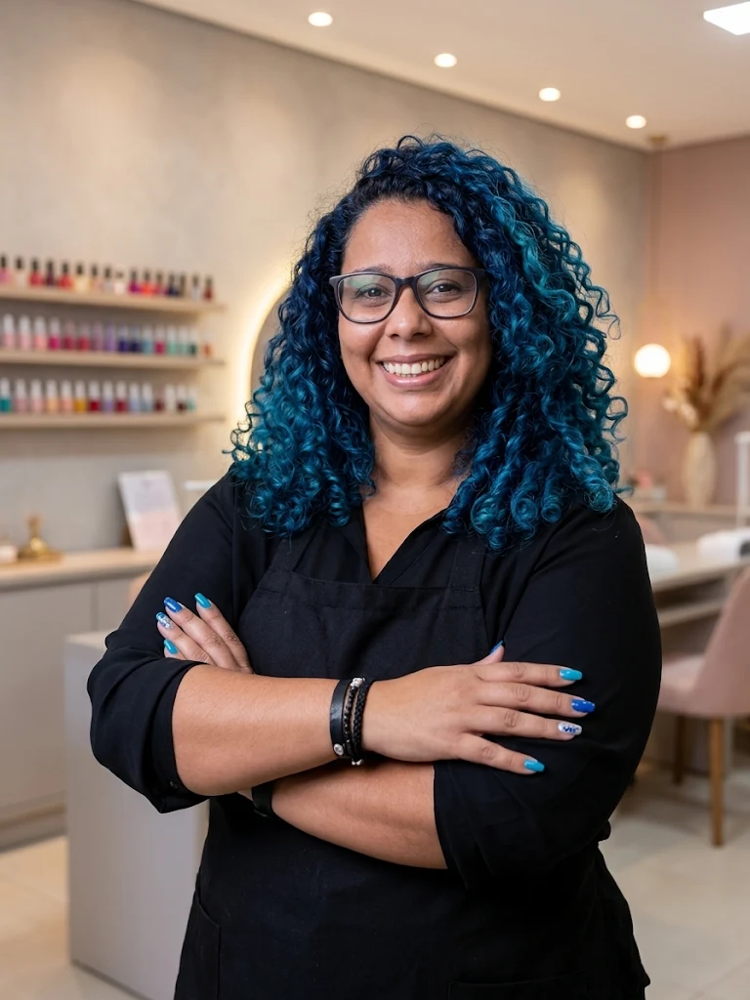
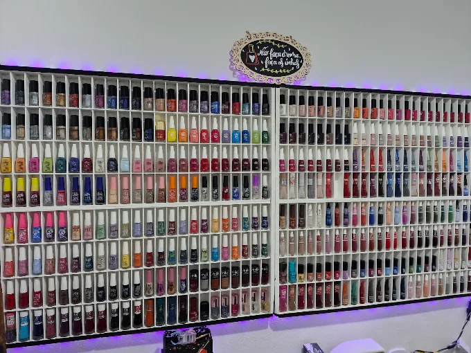
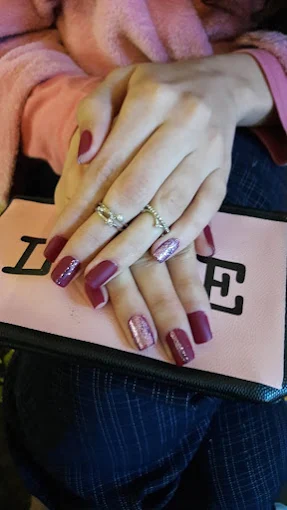
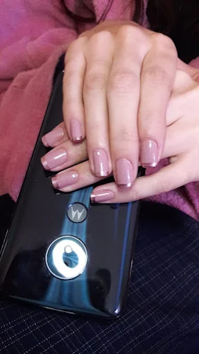

Unhas bem feitas.
Conversa boa.
Seu momento.
Manicure e pedicure raiz: alicate, lixa, acetona e esmalte. Sem alongamento, gel ou blindagem. Aqui tem acolhimento, muitas cores e aquela conversa boa.

Escolha seu
próximo horário.
- 01Serviço
- 02Profissional
- 03Data e hora
- 04Confirmação
O que você procura?
Escolha um serviço para começar.
Vamos cuidar das suas unhas?
Escolha quem vai cuidar das suas unhas.
Reserve seu melhor momento.
Os horários exibidos refletem a agenda atual do profissional.
Falta pouco para confirmar.
Confira os detalhes e informe seus dados.
Horário garantido.
Seu horário foi registrado na agenda da Unhas da Simone.
O arquivo de agenda inclui alertas de 1 hora e 30 minutos antes, quando o aplicativo de calendário aceita esses avisos. No Google Agenda, os alertas também respeitam as notificações configuradas na sua conta. No WhatsApp, confira o resumo e toque em enviar.
Simples e direto
Um horário feito para você.
A agenda considera o expediente, os horários bloqueados e o tempo reservado para cada atendimento. Se precisar ajustar algo, a Simone pode reorganizar os horários pelo painel.
Um pouco da salinha
Cores, cuidado e boas conversas.



